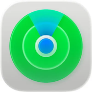

Personas
Dispositivos
Objetos
Yo
Localizando…
Ajustes
Configura la palabra clave que activa la escucha
Palabra mágica
Escucha invisible en Safari / Firefox
Con esto puesto, en Safari/Firefox la escucha es 100% silenciosa (sin teclado). Sin clave, se usa el modo dictado con teclado. La clave se consigue en platform.openai.com y solo se guarda en esta pestaña mientras esté abierta.
Prueba manual (opcional)
Depuración del micrófono
Modo:
—
Estado:
apagado
Oyendo ahora:
—
Última ubicación capturada:
ninguna
Búsqueda del sitio:
—
Cerrar
Guardar